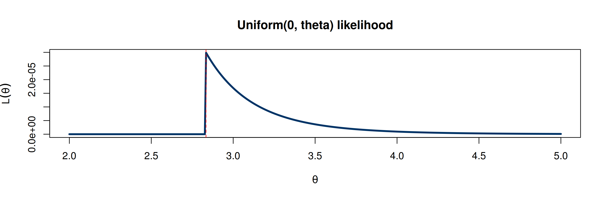
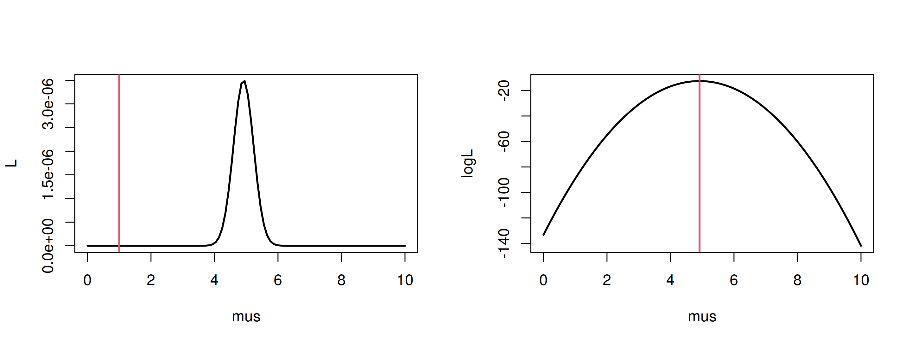
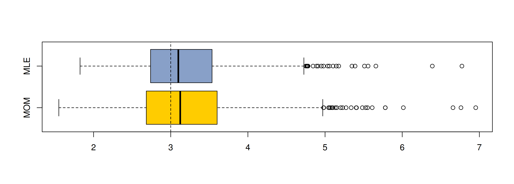
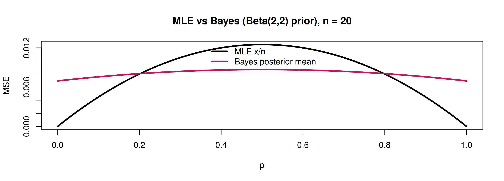

set.seed(4750); x <- rgamma(200, shape = 3, rate = 2)
m1 <- mean(x); s2u <- mean(x^2) - m1^2
c(r_mom = m1^2 / s2u, lambda_mom = m1 / s2u) r_mom lambda_mom
2.685 1.897 MATH 4750 / MSSC 5750 Computational Statistics
Marquette University
MATH 4750 - Spring 2027
optim()
\[ f(\mathbf{x}\mid\theta) = f(x_1,\dots,x_n\mid\theta) = f(x_1\mid\theta)\times\cdots\times f(x_n\mid\theta) = \prod_{i=1}^n f(x_i\mid\theta). \qquad (1) \]
\[ m_r = \frac1n\sum_{i=1}^n X_i^r,\qquad \alpha_r = \mathrm{E}[X^r] = \begin{cases}\sum_x x^r\mathrm{P}(X=x) & \text{discrete}\\ \int_{-\infty}^\infty x^rf(x)\,dx & \text{continuous}\end{cases} \]
\[ \begin{cases} \alpha_1(\theta_1,\dots,\theta_k) = m_1\\ \alpha_2(\theta_1,\dots,\theta_k) = m_2\\ \quad\vdots\\ \alpha_k(\theta_1,\dots,\theta_k) = m_k \end{cases} \]
Bernoulli / Bin\((1,\pi)\): \(\alpha_1 = \pi \stackrel{\text{set}}{=} \bar X\) \(\Rightarrow\) \(\tilde\pi = \bar X\).
Bin\((n,\pi)\), \(m\) samples: \(\alpha_1 = n\pi \stackrel{\text{set}}{=} \bar X\) \(\Rightarrow\) \(\tilde\pi = \bar X/n\).
Pois\((\lambda)\): \(\alpha_1 = \lambda \stackrel{\text{set}}{=}\bar X\) \(\Rightarrow\) \(\tilde\lambda = \bar X\).
\(N(\mu,\sigma^2)\): \[ \begin{cases} \alpha_1 = \mu \stackrel{\text{set}}{=}\bar X = m_1\\ \alpha_2 = \sigma^2+\mu^2 \stackrel{\text{set}}{=} \frac1n\sum X_i^2 = m_2 \end{cases} \] \(\Rightarrow\ \tilde\mu = \bar X\), \(\ \tilde\sigma^2 = \frac1n\sum X_i^2 - \bar X^2 = S_u^2\).
Gamma\((r,\lambda)\): \(\mathrm{E}X = r/\lambda\), \(\mathrm{Var}X = r/\lambda^2\) \(\Rightarrow\) \(\tilde\lambda = \bar X/S_u^2\), \(\tilde r = \bar X^2/S_u^2\).
\[ L(\theta\mid\mathbf{x}) = f(\mathbf{x}\mid\theta) = \prod_{i=1}^n f(x_i\mid\theta). \qquad (2) \]
\[ \frac{\partial \ln L(\theta\mid\mathbf{x})}{\partial\theta} = 0. \qquad (3) \]

set.seed(4750)
n <- 10; mus <- seq(0, 10, length = 100); mu <- 5; x <- rnorm(n, mean = mu)
Like <- function(mu, data = x) prod(dnorm(data, mean = mu))
logLike <- function(mu, data = x) sum(dnorm(data, mean = mu, log = TRUE))
max.L <- optim(1, Like, data = x, method = "BFGS", control = list(fnscale = -1))
max.logL <- optim(1, logLike, data = x, method = "BFGS", control = list(fnscale = -1))
L <- sapply(mus, Like); logL <- sapply(mus, logLike)
par(mfrow = c(1, 2))
plot(mus, L, type = "l", lwd = 2); abline(v = max.L$par, col = 2, lwd = 2)
plot(mus, logL, type = "l", lwd = 2); abline(v = max.logL$par, col = 2, lwd = 2) optim_L optim_logL xbar
1.000 4.914 4.914 
Maximizing \(L\) directly fails here: at the starting value \(L(1)\approx 10^{-35}\) is numerically flat, so optim never moves. Always maximize \(\log L\).
There is no closed form for the Gamma MLE of \(r\). Maximize numerically, starting at the MOM estimate:
\[ \ell(r,\lambda) = nr\log\lambda - n\log\Gamma(r) + (r-1)\sum\log x_i - \lambda\sum x_i \]
set.seed(4750); x <- rgamma(200, shape = 3, rate = 2)
nll <- function(th) -sum(dgamma(x, shape = th[1], rate = th[2], log = TRUE))
mom <- c(mean(x)^2 / var(x), mean(x) / var(x))
fit <- optim(mom, nll, method = "L-BFGS-B", lower = c(1e-6, 1e-6), hessian = TRUE)
rbind(MOM = mom, MLE = fit$par, SE = sqrt(diag(solve(fit$hessian)))) [,1] [,2]
MOM 2.6718 1.8875
MLE 2.7657 1.9539
SE 0.2616 0.2026set.seed(4750)
est <- t(replicate(1000, {
x <- rgamma(50, shape = 3, rate = 2)
mom <- mean(x)^2 / var(x)
mle <- optim(c(mom, mean(x) / var(x)), function(th) -sum(dgamma(x, th[1], th[2], log = TRUE)),
method = "L-BFGS-B", lower = c(1e-6, 1e-6))$par[1]
c(MOM = mom, MLE = mle)
}))
rbind(bias = colMeans(est) - 3, sd = apply(est, 2, sd), MSE = colMeans((est - 3)^2)) MOM MLE
bias 0.2003 0.1843
sd 0.7614 0.6529
MSE 0.6192 0.4598
\[ \pi(\theta\mid x) = \frac{f(x\mid\theta)\pi(\theta)}{\int f(x\mid\theta)\pi(\theta)\,d\theta} = \frac{f(x\mid\theta)\pi(\theta)}{m(x)}, \]
where \(m(x) = \int f(x\mid\theta)\pi(\theta)\,d\theta\) is the marginal density of \(X\).
\[ \begin{aligned} \delta^\pi &= \frac{\Gamma(a+b+n)}{\Gamma(a+x)\Gamma(n-x+b)}\int_0^1 p\, p^{x+a-1}(1-p)^{n-x+b-1}\,dp\\ &= \frac{n}{a+b+n}\left(\frac xn\right) + \frac{a+b}{a+b+n}\left(\frac{a}{a+b}\right). \end{aligned} \]
\[ \mathrm{Var}\delta^\pi = \left(\frac{n}{a+b+n}\right)^2\mathrm{Var}\!\left(\frac xn\right) < \mathrm{Var}\!\left(\frac xn\right). \]
p <- seq(0, 1, length = 200); n <- 20; a <- b <- 2; w <- n / (a + b + n)
mse_mle <- p * (1 - p) / n
mse_bayes <- w^2 * p * (1 - p) / n + ((1 - w) * (a / (a + b) - p))^2
matplot(p, cbind(mse_mle, mse_bayes), type = "l", lty = 1, lwd = 3, col = c("black", "#C2185B"),
ylab = "MSE", main = "MLE vs Bayes (Beta(2,2) prior), n = 20")
legend("top", c("MLE x/n", "Bayes posterior mean"), col = c("black", "#C2185B"), lwd = 3, bty = "n")
For which values of \(p\) does the Bayes estimator win? How does the picture change with \(n = 200\)?
optim, Ch 14).